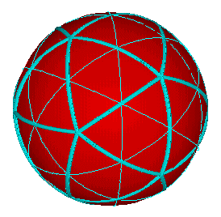
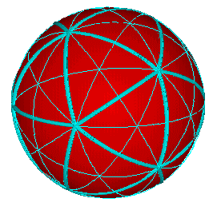
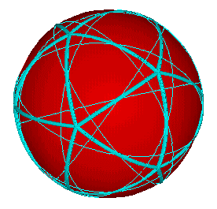
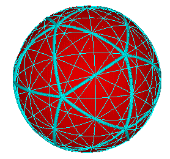
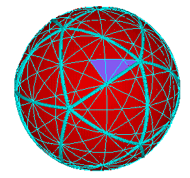
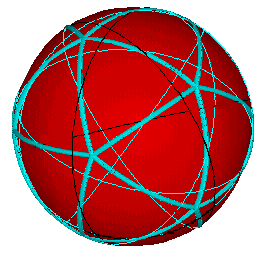
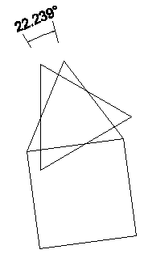

Consider the Icosahedron. It has 12 vertices, 30 edges and 20 triangular faces.
If we spin the Icosahedron about an axis through, say, 2 opposite vertices, a great circle is defined. This is the "equator" as the icosahedron is spun.
From the above inventory of vertices, edges and faces, we find that we can generate the following great circles of symmetry from the following axes of the Icosahedron:
|  | 6 spin axes through the 12 vertices (The thick lines are shown only to identify the Icosahedron) |
|  | 15 spin axes through the 30 opposite mid-edge points (The thick lines are included as part of the great circles) |
|  | 10 spin axes through the 20 opposite face centers (The thick lines are shown only to identify the Icosahedron) |
Combining all the great circles together results in the following image.

In the next illustration, one of the 120 LCD spherical triangles of the Icosahedron has been colored.
If we look again at the great circles generated by the 10 axes of spin of the Icosahedron's 20 face centers, we discover that these great circles generate the outline of the Vector Equilibrium (cuboctahedron). This illustrates how the 5-fold symmetrical system of the Icosahedron generates the 4-fold symmetry system.
It is also possible to identify the spherical octahedron defined by the Icosahedron's great circles.
Here then is a bridge between 5-fold and 4-fold symmetrical systems.
The "skew" angle between the Icosahedron's triangular face and the VE's triangular face is (approx.) 22.238756 degrees. The two triangular faces have the same face centers.
Usage Note: My work is copyrighted. You may use my work but you may not include my work, or parts of it, in any for-profit project without my consent.